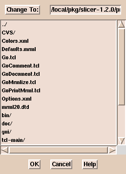
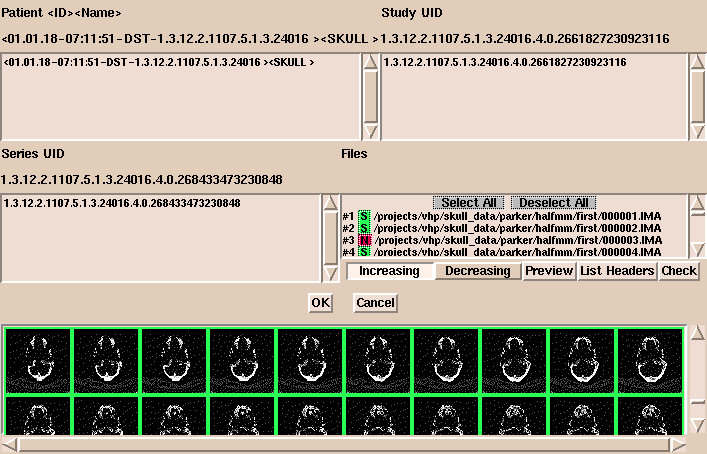

http://intweb/doc/sysadmin/Gatekeeper/skeyinfo.html
User documentation for using DICOM data with the 3D slicer
The 3D Slicer now supports the reading of DICOM Version 3.0 CT and MRI images.
The SPL gratefully acknowledges Attila Tanacs for the work he did to add this
powerful capability to the 3D Slicer. Currently, segmented and otherwise modified
DICOM images are written in the same format as other images that the slicer reads.
(i.e. the images are written in big-endian format and numbered imagename.001 to
imagename.xxx)
To begin reading DICOM files with 3d Slicer, please take the following steps:
-
Select the Data and Add Volume tabs
-
Select the DICOM tab from the Properties menu. The DICOM
tab does not always show completely. It is the right-most tab
-
Choose the Select Dicom Volume tab. This will bring up a file browser that
looks like this:

Note that this browser does not sort the filenames alphabetically, so if there are
many files in a directory, it is often easier to type the path to the images than it
is to use the browser.
-
After you have selected an image from the directory containing your DICOM data and
hit the OK button in the browser, the following interface will appear:

If there are many images in the directory it might seem like the
program is not working but it is slow because it gathers a lot of information
about the dataset.
The user can select or deselect any images and load them into 3D Slicer in
increasing or decreasing order. As the interface shows, selected images are
shown in green and deselected images are shown in red. The preview tab will
display small icon-size images so the user can preview the data prior to
loading it. The user can change the size of the previewed images. The default
size is a 32x32 pixel image which seems to work optimally. The bottom panel
of the interface image above shows images being previewed. This interface has
several other useful features. The List Headers tab will print out salient
information about each image in the series. This information desccribes the
geometry of each slice.
The Check tab is an extremely useful
feature, particularly for DICOM data where the organization of the data is
not always apparent. This tab will examine the slice location of each image
in the volume to make sure all slices are the same distance apart. If the
slices are not all the same "thickness", the Check procedure will print
information about the "fragments" that comprise the volume and suggest how
the data should be grouped. This helps to show when slices are missing
and is most useful when several dicom acquisitions are lumped together
into what is apparently a single acquisition but is really multiple
acquisitions.
-
After you are satisfied that the data is organized properly, hit the OK
button in the interface, and hit the Extract Header tab. This will
display the information that was extracted from the headers describing the
dataset. This software is very robust and usually does the right thing,
so there is usually no need to change the parameters that the program
extracts. You can now use the 3D Slicer as you would with any other dataset.